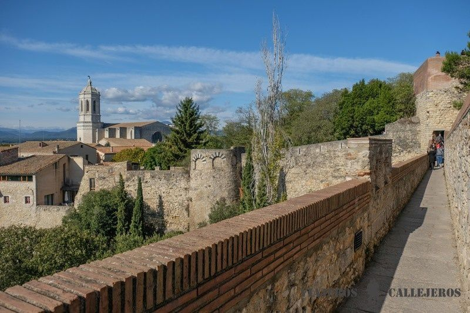

|

|

|

|
|---|---|---|---|
Cómo llegar |
Dónde dormir |
Qué comer |
Qué hacer |
Cataluña está situada al noreste de la Península Ibérica. El acceso a Cataluña puede realizarse en avión, en barco, en tren o por carretera. |
Los alojamientos de Cataluña satisfacen al viajero más exigente, desde un ambiente diferente al estilo más clásico. Hay multitud de opciones donde elegir. |
La gastronomía de Cataluña forma parte de la dieta mediterránea e incluye una gran variedad de productos del mar, de la montaña y de la huerta. |
Conoce las posibilidades que brinda esta región del norte de la Península Ibérica vengas en la época del año que vengas. |

| 
| 
| 
|
|---|

|
Con una extensión de más de 17 hectáreas, el Parque
Güell está cubierto por formas onduladas, columnas con aspecto de árboles,
figuras de animales y formas geométricas.
La mayor parte de las superficies están decoradas con mosaicos realizados con
trocitos de cerámica de colores.
| ||||||||||||||||||||||||||||||||||||||
|
La Rambla es una larga avenida barcelonesa, de 1,2 km de
longitud exactamente, que recorre el trayecto desde La Plaza de Catalunya hasta el Mirador de
Colón frente al antiguo puerto de la ciudad.
|
| ||||||||||||||||||||||||||||||||||||||

|
La Sagrada Familia es el monumento más conocido y característico de
Barcelona. Como máximo exponente de la arquitectura modernista creada por Gaudí, miles de
turistas acuden cada día a contemplar el curioso aunque inacabado templo.
| ||||||||||||||||||||||||||||||||||||||
|
El barrio Gótico es el núcleo más antiguo de la ciudad y su casco antiguo,
y es donde se encuentran la mayoría de los edificios y calles con significado histórico de la ciudad.
A lo largo de los siglos ha asumido el papel de centro de representación política e institucional.
|

| ||||||||||||||||||||||||||||||||||||||

|
El mercado medieval de Montblanc es uno de los más
auténticos de Cataluña. Cada año durante el mes de abril, con motivo de la
Setmana Medieval de Sant Jordi de Montblanc, paradas de embutidos, quesos o
dulces inundan el casco antiguo de Montblanc.
| ||||||||||||||||||||||||||||||||||||||
|
En el pueblo de Farena, en la comarca de l’Alt Camp, hay
un sendero que se adentra por los bosques hasta llegar hasta un oasis en medio de las
Montañas de Prades, el Toll de l’Olla. Se trata de una profunda poza en el rio Brugent,
por la que se precipita un pequeño un salto de agua desde las rocas superiores.
|

| ||||||||||||||||||||||||||||||||||||||

|
Siurana es un pequeño pueblo de casas y callejuelas empedradas
situado al borde de un precipicio de roca caliza. Con unas espectaculares vistas al
Pantano de Siurana, la Sierra de Montsant, y a las Montañas de Prades, se podría decir
que Siurana es todo un espectáculo para la vista se mire por donde se mire.
| Encaramado a una roca a orillas del Ebro, se encuentra el pueblo de Miravet.
Esta situado en un meandro del río sobre un peñón arenisco por el que suben sus casas en todos
vainilla y ocre. Miravet es un pueblo para pasear por las calles del Cap de la Vila, visitar
la Iglesia Vella o asomarse al espectacular mirador de la Plaça Sanaqueta.
|
| 
| Una de las mejores cosas que hacer en Girona
es subir los 90 escalones de la impresionante escalera de estilo barroco
que te dejan delante de la fantástica Catedral.
| Entrar en el claustro del Monasterio de Sant Pere de
Galligans de estilo románico y construido en el siglo X, es otra de las
mejores cosas que hacer en Girona.Esta antigua abadía benedictina,
sede en Gerona del Museo de Arqueología de Cataluña, destaca por los preciosos capiteles
decorados con motivos vegetales, el campanario octogonal y el claustro románico con más
capiteles minuciosamente decorados.
| 
| 
| Estas casas de fachadas de vivos colores que
se encuentran colgando sobre en río Oñar, en el tramo que discurre
por el casco antiguo, es uno de los lugares que visitar en Girona más bonitos.
| La ciudad de Girona está situada en una posición fronteriza
y estratégica, por lo que requirió desde sus inicios de la construcción de una
muralla defensiva con varios torreones.La primera muralla fue construida en el
siglo I a.C. por los romanos y no fue hasta la ampliación en la Edad Media que
se creó un paseo que permitía recorrer una de las murallas carolingias más extensas
de Europa.
|

| 
| Paseo fácil y corto, de carácter familiar,
que da la vuelta al lago de la Bassa d'Oles situado en un espacio natural
de especial belleza. El majestuoso bosque de Varicauba esconde en medio de
toda su masa forestal este pequeño tesoro de agua.
| El Parc Nacional d´Aigüestortes i Estany de Sant
Maurici, es otra de las maravillas que ver en Lleida y nuestro rincón
favorito para disfrutar de la naturaleza.Este espacio natural protegido,
único en el sur de Europa, te permite realizar rutas de senderismo
entre montañas de más de 3.000 metros de altura, lagos de todo tipo y
colores, cascadas, ríos y una gran diversidad de fauna y flora.
|
|
| Una de las mejores cosas que hacer en Lleida es pasear
por las callejuelas de Guimerá, uno de los pueblos más bonitos que ver en
Cataluña.Flanqueado por el río Corb y situado en una ladera de una montaña, este
pueblo medieval enamora por sus casas de piedra con detalles en puertas y ventanas,
y sus empinadas callejuelas, algunas con arcadas.
| La Vall d’Aran, una comarca de los Pirineos Centrales que hace
frontera con Aragón y Francia, es un auténtico paraíso para los amantes de la naturaleza y
otro de los lugares que visitar en Lleida más bonitos.
| 
| ||||||||||||||||||||